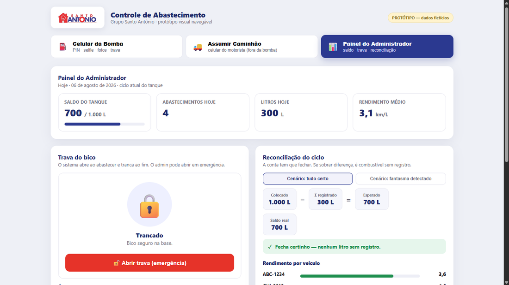
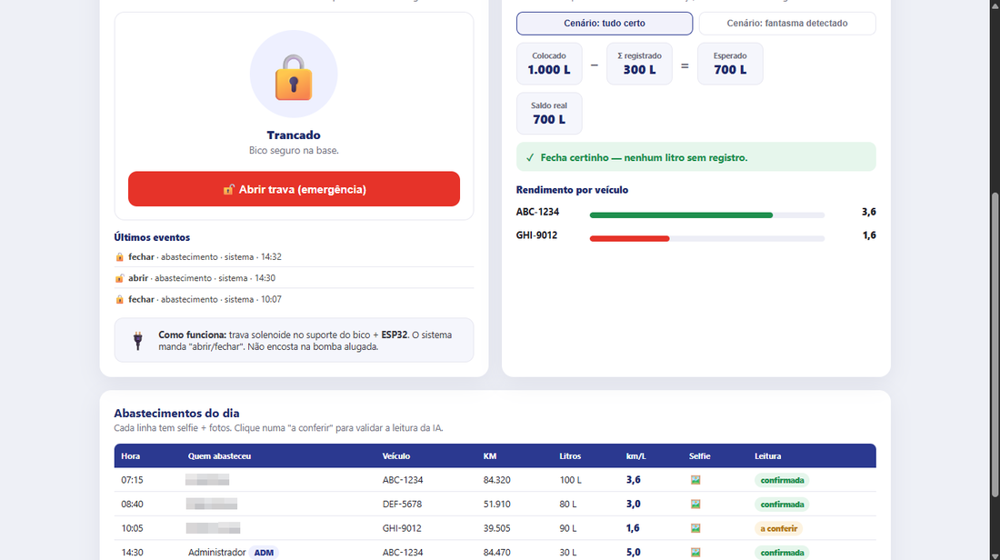

O motorista fotografa o odômetro e a bomba. A inteligência artificial lê os números, registra litros e quilometragem e monta o controle da frota sozinha. Ninguém digita, ninguém "esquece de anotar".

O controle de combustível dependia de o motorista anotar odômetro e litros num papel ou numa planilha — quando lembrava. Números errados, letras ilegíveis e registros esquecidos tornavam impossível saber o consumo real de cada veículo. Sem dado confiável, não dá pra flagrar desperdício nem abastecimento fora do padrão.
Um sistema que troca a digitação por foto e deixa a IA fazer a leitura:
O erro de digitação simplesmente deixou de existir, porque não há mais digitação. O motorista gasta segundos, o dado entra limpo e a empresa passa a ter um controle de frota confiável — com base pra enxergar consumo, comparar veículos e identificar o que está fora da curva. Em uso, no dia a dia.
Telas reais do sistema, por dentro.
